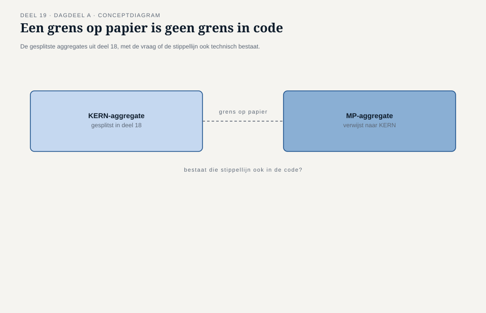
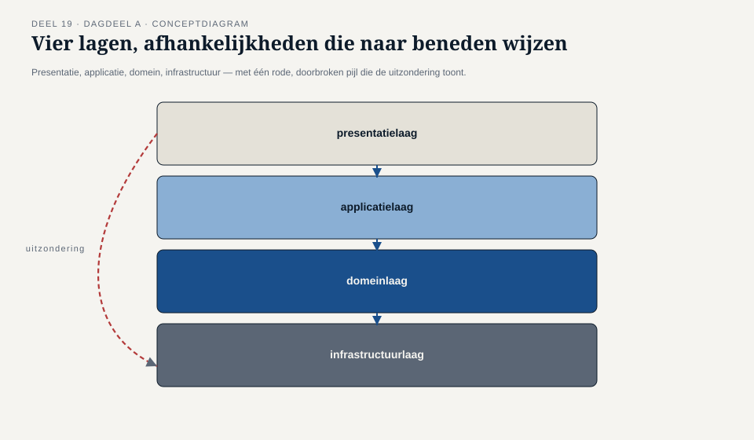
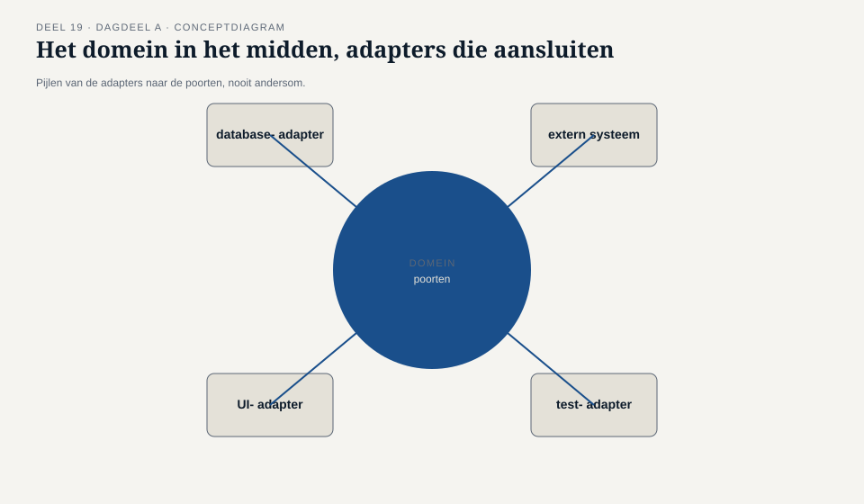
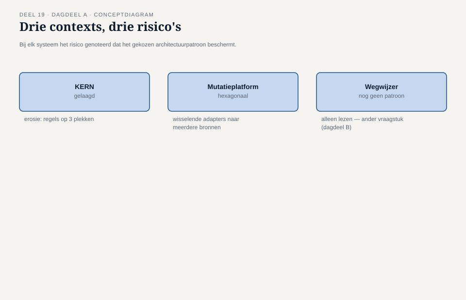
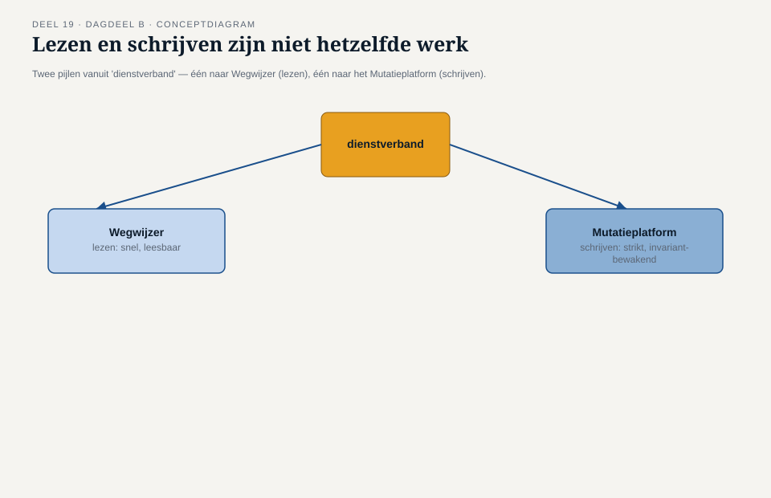
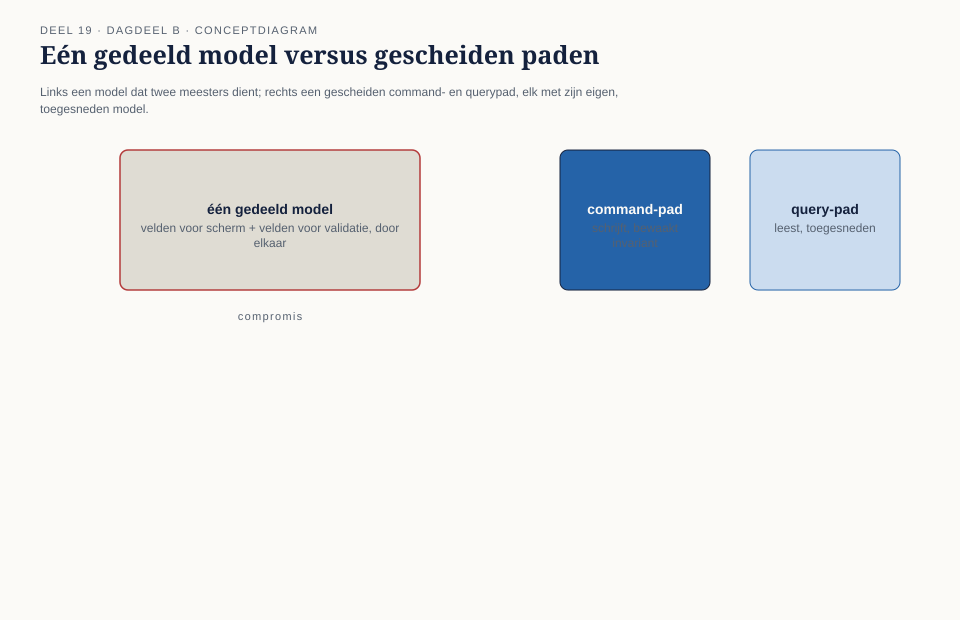
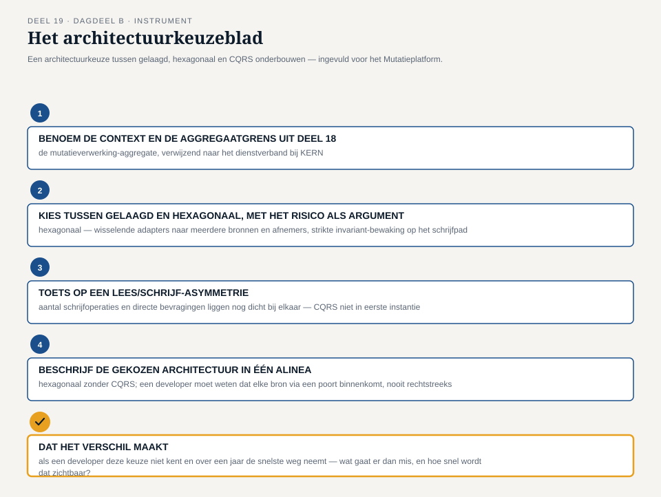

Deel 19 — Applicatie-architectuurpatronen: hexagonaal, gelaagd, CQRS als patroon
Reader · Ductus-cursus Domain-Driven Design · niveau 2 (professional) · deel 19 van 30 · twee dagdelen
19.1 Waar dit deel over gaat
Deel 18 eindigde met een splitsing, niet met een oplossing. De dienstverband-aggregate is losgemaakt: KERN behoudt de volledige, authentieke aggregate, het Mutatieplatform krijgt een eigen, kleinere aggregate die verwijst naar identiteit en versie. De termijnbewaking is een eigen aggregate geworden, verbonden met een signaal in plaats van gedeelde schrijftoegang. Dat zijn modelleerbeslissingen — uitspraken over welke invariant waar hoort en wie haar bewaakt. Geen van beide beslissingen zegt iets over hoe een systeem, in zijn eigen code, die grens ook daadwerkelijk beschermt tegen de druk die er dagelijks op staat: een deadline, een developer die “het is maar één regel” denkt, een collega-team dat vraagt om “er even snel bij te mogen.”
Dit deel behandelt de applicatie-architectuurpatronen die dat wél doen — patronen die letterlijk zo genoemd worden in het officiële iSAQB-curriculum: hexagonale architectuur, gelaagde architectuur, en CQRS. Alle drie zijn platformonafhankelijke ontwerpkeuzes, geen technologieën: je kunt ze bouwen met vrijwel elke taal, elk framework, elke database. Wat ze gemeen hebben is een antwoord op dezelfde vraag die deel 18 openliet — hoe zorg je dat een grens die je bewust hebt getekend, ook blijft staan wanneer er iemand tegenaan duwt?
Dit deel beslaat, conform het familiemodel, twee dagdelen. Dat is geen uitbreiding om de stof te vullen, maar een erkenning van iets dat het opzetdocument van deze cursus expliciet benoemt: dit is het deel waar de meeste teams een architectuurpatroon kiezen zonder de achterliggende afweging te kennen. Dagdeel A behandelt hexagonale architectuur en gelaagde architectuur als reactie op precies de aggregaat- en teamgrenzen die deel 18 blootlegde: hoe bescherm je die grenzen ook technisch, binnen elke afzonderlijke context van het landschap? Dagdeel B behandelt CQRS als patroon, met de asymmetrie tussen Wegwijzer (dat alleen leest en toont) en KERN/Mutatieplatform (dat schrijft en muteert) als het scherpste voorbeeld uit het landschap, en eindigt met een architectuurkeuze die het team moet verdedigen voor twee van de vijf systemen.
Aan het eind van dit deel kun je:
- het verschil tussen gelaagde architectuur en hexagonale architectuur uitleggen in termen van waar de afhankelijkheden op wijzen, en beargumenteren wanneer het ene het andere overbodig maakt;
- een bounded context herkennen waarin de aggregaatgrens uit deel 18 technisch onvoldoende beschermd is, en een architectuurkeuze voorstellen die dat oplost;
- CQRS als patroon toepassen: wat het oplost, wanneer het overkill is, en waarom het geen synoniem is voor “twee databases”;
- met het architectuurkeuzeblad een architectuurbeslissing voor een bounded context onderbouwen en verdedigen tegenover een team dat een andere keuze had verwacht.
DAGDEEL A — Hexagonale en gelaagde architectuur: grenzen technisch beschermen
19.2 De casus: een grens op papier is geen grens in code
Uit het casusdossier, vervolgd: het team heeft de dienstverband-aggregate gesplitst, maar de vraag die daarna blijft liggen komt niet van Vera of Karsten, maar van Otto.
“We hebben nu twee aggregates,” zegt Otto, twee weken na deel 18, terwijl hij de eerste code voor de mutatieverwerking-aggregate op het scherm heeft staan. “Mooi. Maar niks in mijn codebase houdt tegen dat iemand — ikzelf over drie maanden, of een nieuwe developer die de context map nooit heeft gezien — gewoon rechtstreeks een query naar de KERN-database schrijft omdat dat sneller is dan via de aggregate te gaan. De grens die we op papier hebben getekend, bestaat in de database niet. Hij bestaat alleen zolang iedereen zich eraan herinnert.”
Foppe herkent de vraag onmiddellijk als een andere dan die het team tot nu toe stelde. “Tot en met deel 18 hebben jullie besloten wát bij elkaar hoort en wie het bewaakt. Otto’s vraag is een vraag over hóe — hoe zorg je dat een beslissing die vandaag klopt, over een jaar nog steeds wordt nageleefd, ook door mensen die er vandaag niet bij waren?”
Vera, die als eerste de kosten van een ongeorganiseerde shared kernel benoemde in deel 18, ziet de parallel direct. “Bij KERN hebben we dat probleem al veertien jaar. Niet omdat niemand het ooit goed bedoelde, maar omdat de code zelf niets afdwingt. Een query kan overal vandaan komen. Een validatieregel staat op drie plekken, licht verschillend, omdat niemand meer weet welke de oorspronkelijke is.” Karsten voegt eraan toe wat het Werkgeversportaal daarvan heeft geleerd, op de harde manier: “WGP 2.0 mislukte niet omdat niemand het domein begreep. Het mislukte deels omdat de architectuur het onmogelijk maakte om één stuk aan te passen zonder drie andere stukken kapot te maken — alles zat aan alles vast, op een manier die niemand meer kon overzien.”
Daan vat de opgave van dit deel samen: “We hebben in deel 18 geleerd dat een grens een eigenaar nodig heeft. Wat we nu leren, is dat die eigenaar een muur nodig heeft die hem ook daadwerkelijk beschermt — niet alleen een afspraak op papier.”

19.3 Gelaagde architectuur: afhankelijkheden die één kant op wijzen
Gelaagde architectuur verdeelt een systeem in een klein aantal lagen die elk een eigen verantwoordelijkheid dragen, met een vaste regel over welke laag van welke andere laag mag weten. De gangbare indeling kent vier lagen: een presentatielaag (wat een gebruiker of een ander systeem ziet en aanstuurt), een applicatielaag (die coördineert wat er moet gebeuren, zonder zelf de domeinregels te bevatten), een domeinlaag (de aggregates, entities, value objects en domeinregels uit deel 5 tot en met 18) en een infrastructuurlaag (databases, externe koppelingen, bestandssystemen). De regel die de lagen tot een architectuur maakt, en niet slechts tot een mapstructuur, is de richting van de afhankelijkheden: elke laag mag alleen weten van de laag direct eronder, nooit andersom, en de domeinlaag weet idealiter van geen enkele andere laag — geen import van een databasebibliotheek, geen kennis van hoe een scherm eruitziet.
Die regel lost precies het probleem op dat Vera bij KERN beschrijft. Als de domeinlaag niet weet hoe de database eruitziet, kan een query nooit rechtstreeks om de domeinregels heen — elke wijziging aan de deelnemersgegevens moet via de domeinlaag lopen, simpelweg omdat er geen andere weg naar de database open ligt vanuit de rest van het systeem. Dat is geen conventie die iedereen zich moet herinneren; het is een structurele eigenschap van hoe de code is opgebouwd. Een developer die “snel even” een query rechtstreeks naar de database wil schrijven vanuit de presentatielaag, moet daarvoor letterlijk de laagstructuur doorbreken — een handeling die opvalt bij een code review, in plaats van een handeling die niemand ziet.
Gelaagde architectuur is, van de drie patronen in dit deel, het minst nieuwe idee en het meest wijdverbreide: vrijwel elk bestaand systeem in het Meridiaan-landschap heeft, meer of minder consequent, een vorm van lagen. Het is ook precies om die reden dat Vera’s observatie zo scherp is: KERN hééft lagen, en toch is de grens uitgehold. Een laagstructuur beschermt alleen wat de regel ook daadwerkelijk afdwingt. Zodra ergens één uitzondering wordt toegestaan — “voor deze ene rapportage mag de presentatielaag rechtstreeks bij de database” — begint de erosie die veertien jaar later niet meer terug te draaien is zonder het hele systeem opnieuw te bouwen.

19.4 Hexagonale architectuur: het domein in het midden, de rest als aansluiting
Hexagonale architectuur, ook wel ports-and-adapters genoemd, kiest een andere invalshoek voor hetzelfde probleem. In plaats van lagen die van boven naar beneden op elkaar steunen, plaatst hexagonale architectuur het domein — de aggregates, de domeinregels, de invarianten uit deel 5 tot en met 18 — letterlijk in het midden, zonder enige kennis van wat er “buiten” gebeurt. Alles wat het domein nodig heeft van de buitenwereld (een database om iets op te slaan, een externe partij om iets aan te melden, een gebruiker die iets invoert) wordt beschreven als een poort: een interface die zegt wát het domein nodig heeft, zonder te zeggen hóe dat geleverd wordt. Buiten die poort zit een adapter: de concrete, technische implementatie die de poort invult — een database-adapter, een adapter die een extern systeem aanroept, een adapter die een gebruikersinterface toont.
Het verschil met gelaagde architectuur is subtieler dan het lijkt, en het zit niet in de vraag “hoeveel onderdelen heeft het systeem” maar in de vraag “wie is van wie afhankelijk”. Bij gelaagde architectuur weet de domeinlaag van niets erboven, maar de afhankelijkheidsrichting binnen de lagen zelf blijft één kant op: applicatie hangt af van domein, domein hangt (idealiter) van niets. Bij hexagonale architectuur wordt die richting expliciet omgedraaid voor alles wat “naar buiten” gaat: het domein definieert de poort, en de adapter — de technische implementatie — hangt af van die poort, niet andersom. Een database-adapter implementeert een interface die het domein heeft gedefinieerd; het domein importeert nooit een databasebibliotheek. Dat is een sterkere garantie dan gelaagde architectuur biedt: het domein kan letterlijk niet compileren met een verwijzing naar de database, omdat die verwijzing structureel de verkeerde kant op zou wijzen.
Die extra garantie heeft een prijs. Hexagonale architectuur vraagt meer indirectie — elke aansluiting op de buitenwereld krijgt een expliciete poort, ook als er (nog) maar één adapter voor bestaat — en die indirectie levert alleen waarde op wanneer ze iets beschermt dat het waard is om te beschermen: een aggregate met een invariant die niet mag worden omzeild, een domeinregel die op meerdere plekken consistent moet blijven, of een systeem dat waarschijnlijk meerdere, wisselende adapters nodig heeft (bijvoorbeeld: vandaag een adapter naar de bestaande database, over twee jaar een adapter naar iets anders, zonder dat het domein daarvoor hoeft te veranderen). Voor een klein systeem met één, stabiele database en weinig domeinregels die bescherming nodig hebben, is de extra indirectie van hexagonale architectuur kosten zonder aantoonbare baat — een gelaagde architectuur, consequent toegepast, doet dan hetzelfde werk met minder onderdelen.

19.5 Wanneer het ene het andere overbodig maakt
Het contextmap-team stelt zichzelf, na de uitleg van beide patronen, de vraag die Foppe voorspelde dat zou komen: “Welke van de twee moeten we dan gebruiken?” Foppe’s antwoord is geen keuze tussen de twee, maar een criterium om per bounded context te bepalen wat die context nodig heeft.
De vraag die het verschil maakt, is niet “welk patroon is beter” maar “wat moet deze context beschermen, en tegen wat”. Een gelaagde architectuur beschermt tegen het meest voorkomende risico: dat presentatielogica en domeinlogica door elkaar gaan lopen, zodat niemand meer weet waar een regel hoort. Dat risico bestaat in vrijwel elk systeem, en gelaagde architectuur is er de directe, goedkope remedie tegen. Hexagonale architectuur beschermt tegen een specifieker risico: dat het domein afhankelijk wordt van een concrete technische keuze — een database, een extern systeem, een specifiek protocol — op een manier die het lastig maakt om die keuze later te veranderen, of om het domein te testen zonder de echte database erbij te hoeven halen.
Otto brengt het terug naar het landschap. “Voor het Mutatieplatform, dat straks met meerdere bronnen en meerdere afnemers moet praten — het Werkgeversportaal, KERN, straks misschien nog een bron die we nu niet kennen — is de kans groot dat we adapters gaan wisselen of toevoegen. Dat is precies het scenario waar hexagonaal voor bedoeld is.” Vera stelt de tegenvraag voor KERN: “Wij hebben één database, al veertien jaar dezelfde, en die gaat niet veranderen. Wat wij nodig hebben is niet bescherming tegen wisselende adapters — dat risico bestaat bij ons niet — maar bescherming tegen de erosie die ik net beschreef: regels die op meerdere plekken staan omdat de laagstructuur niet consequent is gehandhaafd. Voor ons is een strak gehandhaafde gelaagde architectuur waarschijnlijk genoeg, en hexagonaal zou alleen extra indirectie toevoegen zonder een risico op te lossen dat we werkelijk hebben.”
Dat onderscheid — niet “welk patroon is moderner” maar “welk risico speelt hier daadwerkelijk” — is de kern van wat dit dagdeel wil meegeven. Een architectuurpatroon dat geen risico oplost dat de context werkelijk loopt, is geen degelijke keuze maar een kostenpost. Priya brengt namens Wegwijzer een derde smaak in: “Wij lezen alleen. We schrijven niets, we bewaken geen invariant van onszelf. Past hexagonaal daar überhaupt op, of is dat een oplossing voor een probleem dat wij niet hebben?” Foppe erkent de vraag als een goede opmaat naar dagdeel B: “Precies daar zit het onderscheid dat we vanmiddag nog niet hebben gemaakt — tussen een context die schrijft en een die alleen leest. Dat verschil is groot genoeg om er een eigen patroon voor te hebben, en dat is waar we na de pauze naartoe gaan.”

DAGDEEL B — CQRS als patroon
19.6 De casus: lezen en schrijven zijn niet hetzelfde probleem
Uit het casusdossier, vervolgd: dagdeel B begint met Priya’s vraag uit het einde van dagdeel A, nu voluit uitgewerkt.
Priya opent dagdeel B met een concreet voorbeeld uit haar eigen systeem. “Wegwijzer toont een deelnemer zijn opgebouwde aanspraken, een prognose, en sinds kort een overzicht van lopende mutaties. Dat overzicht moet snel zijn — een deelnemer die inlogt wil binnen een paar seconden zien waar hij staat — en het moet begrijpelijk zijn, in taal en vorm die past bij hoe iemand zijn eigen pensioensituatie wil lezen, niet in de vorm waarin KERN het intern vasthoudt. Maar Wegwijzer beslist nooit iets. Het valideert geen mutatie, het bewaakt geen invariant, het heeft — in de taal van deel 18 — geen enkele aggregate van zichzelf.”
Karsten herkent het spiegelbeeld vanuit het Mutatieplatform. “Bij ons is het precies andersom. Elke mutatie die binnenkomt moet strikt gevalideerd worden tegen de regels die we in deel 16 en 17 hebben uitgewerkt — een deeltijdwijziging die niet aan de voorwaarden voldoet, mag niet worden verwerkt, punt. Snelheid van lezen is daar niet het probleem. Het probleem is: hoe zorgen we dat elke schrijfactie de invarianten van de aggregates uit deel 18 waarborgt, ook onder druk, ook als er twee mutaties bijna gelijktijdig binnenkomen voor hetzelfde dienstverband.”
Foppe legt de twee voorbeelden naast elkaar. “Jullie beschrijven, zonder het zo te noemen, twee heel verschillende soorten werk die toevallen aan hetzelfde begrip ‘dienstverband’: het werk van Wegwijzer is lezen — snel, leesbaar, zonder beslissingen. Het werk van het Mutatieplatform en KERN is schrijven — strikt, met bewaakte invarianten, zonder haast die de regels in de weg zit. De vraag die dit dagdeel beantwoordt is: moet je die twee soorten werk door dezelfde technische weg laten lopen, alleen omdat ze uiteindelijk over hetzelfde gegeven gaan?”

19.7 CQRS: wat het oplost, en wanneer het overkill is
CQRS — command query responsibility segregation — is het patroon dat de vraag uit §19.6 letterlijk neemt: het scheidt het pad waarlangs een systeem gegevens wijzigt (een command, een opdracht die iets wil laten gebeuren en die de invarianten van een aggregate moet respecteren) van het pad waarlangs een systeem gegevens toont (een query, een vraag die alleen leest en niets hoeft te bewaken). De twee paden hoeven, in een CQRS-opzet, niet dezelfde structuur, hetzelfde model of zelfs dezelfde opslagvorm te delen: het schrijfpad is geoptimaliseerd voor correctheid — elke wijziging loopt door de aggregate, die haar invariant bewaakt — terwijl het leespad geoptimaliseerd is voor wat een lezer nodig heeft: snel, in de vorm die past bij de vraag, zonder om te hoeven via de regels die alleen bij het schrijven relevant zijn.
Wat CQRS precies oplost, wordt zichtbaar zodra je de twee paden dwingt om hetzelfde model te delen, wat in veel systemen — inclusief oudere delen van KERN — stilzwijgend gebeurt. Eén model dat zowel de invarianten van het schrijven moet dragen als de leesbaarheid van het tonen moet bieden, wordt onvermijdelijk een compromis: het schrijfmodel krijgt velden en structuren die alleen bestaan om een scherm mooi te laten renderen, en het leesmodel wordt vervuild met technische details die alleen relevant zijn voor de validatie. Vera herkent dat compromis direct als iets wat KERN al veertien jaar meesleept: “Wij hebben velden in onze kernstructuur die uitsluitend bestaan omdat een rapportage ze ooit nodig had, en velden die uitsluitend bestaan voor validatie die een rapportagevraag nooit raadpleegt. Het is één tabel geworden die twee meesters dient, en geen van beide goed.”
CQRS lost dat op door het leesmodel expliciet apart te maken: een eigen, vaak sterk vereenvoudigde representatie, gevoed vanuit wat er op het schrijfpad gebeurt, geoptimaliseerd voor precies de vragen die er echt aan gesteld worden — in Wegwijzers geval: “wat zijn mijn opgebouwde aanspraken, wat is mijn prognose, wat loopt er nu aan mutaties.” Het schrijfpad blijft ondertussen ongemoeid strikt: elke command loopt via de aggregate, die de invariant bewaakt zoals deel 18 die vastlegde, zonder concessies aan leesbaarheid of snelheid.
Wanneer CQRS overkill is. Het patroon lost een reëel probleem op, maar niet elk systeem heeft dat probleem in een mate die de extra complexiteit rechtvaardigt. Foppe is hier expliciet terughoudend, en herhaalt een zin die in dit deel meermaals terugkeert: “CQRS is geen upgrade die elk systeem beter maakt. Het is een antwoord op een asymmetrie die je eerst moet aantonen, niet aannemen.” Drie signalen wijzen op overkill: een systeem waarin lezen en schrijven ongeveer even vaak voorkomen en ongeveer dezelfde structuur nodig hebben (geen aantoonbare asymmetrie); een systeem waarin het bestaande, gedeelde model geen merkbaar compromis oplevert — geen velden die alleen voor de ene kant bestaan en de andere in de weg zitten; en een klein team dat de extra onderdelen (een apart leesmodel, een mechanisme om het leesmodel bij te werken zodra er geschreven wordt) niet kan onderhouden zonder dat het de rest van het werk vertraagt. Het Nabestaandenloket, met zijn kleine schaal en één team dat zowel leest als schrijft binnen dezelfde overzichtelijke aggregate, is een voorbeeld van een context waar CQRS vrijwel zeker overkill zou zijn — niet omdat het patroon daar niet zou werken, maar omdat er geen probleem is dat het hoeft op te lossen.
CQRS is geen synoniem voor “twee databases”. Een veelgemaakte vereenvoudiging is dat CQRS betekent dat je een aparte database voor lezen en een aparte database voor schrijven moet hebben. Dat is één mogelijke, verdergaande uitvoering, maar het patroon zelf gaat over de scheiding van verantwoordelijkheid — command versus query — niet over infrastructuur. Een systeem kan CQRS toepassen met één, gedeelde database, zolang de code zelf het onderscheid bewaart: schrijfoperaties lopen door de aggregate, leesoperaties lopen via een aparte, voor lezen geoptimaliseerde weg die de aggregate niet belast. Pas wanneer de asymmetrie tussen lezen en schrijven groot genoeg wordt — zoals bij Wegwijzer, waar duizenden deelnemers dagelijks lezen tegenover een veel kleiner aantal mutaties dat er per dag daadwerkelijk doorheen gaat — wordt een fysiek gescheiden leesmodel, met een eigen opslagvorm, de logische volgende stap.

19.8 ↗ Uitvoering: het Locked Platform
De scheiding tussen command en query is een modelleerkeuze over verantwoordelijkheid, geen keuze voor een specifieke database-technologie. Een systeem kan CQRS toepassen bovenop een klassieke relationele database, met één opslag die intern twee paden bedient, of bovenop een architectuur waarin het schrijfpad en het leespad ook fysiek en technisch van elkaar gescheiden zijn.
Pieters eigen Locked Platform heeft voor die tweede, verdergaande route gekozen als architecturale grondslag: CQRS en event sourcing liggen aan de basis van het hele platform, niet als latere toevoeging maar als uitgangspunt. Het schrijfpad legt daar niet de actuele staat vast, maar de reeks gebeurtenissen die tot die staat hebben geleid — vergelijkbaar met de event-sourced route die deel 18 §18.6 al noemde voor aggregates als toestandsmachines — en het leespad bouwt daar, apart en asynchroon, een of meer toegesneden leesmodellen uit op, precies zoals Wegwijzer dat voor zijn eigen vraag zou willen. Dat is één mogelijke, consequent doorgevoerde uitvoering van CQRS naast andere, minder verstrekkende routes — dit deel gaat niet verder op de techniek in: de precieze werking van toestandsmachines en event store hoort bij de database- en architectuurcursus. Voor wie de concrete werking wil zien: ↗ Toolbijlage.
19.9 De werkvorm: het architectuurkeuzeblad
Het instrument van dit deel is het architectuurkeuzeblad: een sjabloon om, voor één bounded context, een architectuurkeuze tussen gelaagd, hexagonaal en CQRS te onderbouwen — niet als losse, concurrerende opties, maar als vragen die elkaar aanvullen: hoe bescherm je de grens (gelaagd of hexagonaal), en is er een asymmetrie tussen lezen en schrijven die een eigen behandeling verdient (CQRS, wel of niet bovenop de gekozen basisarchitectuur)?
De vier stappen
Stap 1 — Benoem de context en de aggregaatgrens uit deel 18. Welke aggregate of aggregates leven binnen deze context, en welke invariant bewaken ze? Gebruik, waar van toepassing, een eerder ingevulde grenzentoets als startpunt.
Stap 2 — Kies tussen gelaagd en hexagonaal, met het risico als argument. Welk risico loopt deze context daadwerkelijk: erosie van de laagstructuur door gebrek aan discipline (kandidaat voor een strak gehandhaafde gelaagde architectuur), of afhankelijkheid van wisselende, meerdere of onzekere technische aansluitingen die het domein zouden vervuilen als ze er rechtstreeks in zouden lekken (kandidaat voor hexagonaal)? Onderbouw met een concreet scenario waarin het risico zich voordoet, niet met een voorkeur voor het ene patroon als “moderner”.
Stap 3 — Toets op een lees/schrijf-asymmetrie. Is er een aantoonbaar verschil tussen hoe vaak, hoe snel en in welke vorm deze context gelezen wordt versus geschreven? Zo ja: beschrijf welk deel van het huidige of voorgestelde model een compromis is tussen beide kanten, en overweeg CQRS. Zo nee, of is het team te klein om een gescheiden leesmodel te onderhouden: benoem expliciet waarom CQRS hier (nog) overkill is — dit is een net zo geldige uitkomst van stap 3 als een positieve keuze voor CQRS.
Stap 4 — Beschrijf de gekozen architectuur in één alinea, gericht op wie haar straks moet bouwen. Vat samen: welk basispatroon (gelaagd of hexagonaal), wel of geen CQRS, en welke ene regel een developer moet kennen om de grens niet per ongeluk te doorbreken — zoals Vera’s ontbrekende regel bij KERN, of Otto’s rechtstreekse query die de aggregate omzeilt.
Het veld dat het verschil maakt
Onder de vier stappen staat het afsluitende veld:
Dat het verschil maakt: als een developer die deze keuze niet kent, over een jaar de snelste weg neemt in plaats van de architectonisch juiste — wat gaat er dan mis, en hoe snel wordt dat zichtbaar?
Dit veld dwingt het team om een architectuurkeuze niet als esthetisch of theoretisch te presenteren, maar als een concrete verdediging tegen precies het soort erosie dat Vera bij KERN beschrijft en dat Otto voorzag toen hij zijn eigen, ongecontroleerde query overwoog. Een architectuurkeuze die dit veld niet overtuigend kan invullen, is vermoedelijk gekozen omdat ze bekend of gangbaar is, niet omdat ze een risico afdekt dat de context werkelijk loopt.

19.10 Toepassing: architectuurkeuzes voor twee van de vijf systemen
Foppe sluit het inhoudelijke deel van dagdeel B af met de opdracht die de rest van de sessie vult: elk groepje kiest twee van de vijf systemen uit het Meridiaan-landschap, vult voor beide een architectuurkeuzeblad in, en verdedigt de uitkomst tegenover de rest van het team — niet als presentatie, maar als verdediging, met de andere groepjes in de rol van het team dat een andere keuze had verwacht.
Otto en Karsten, die samen het Mutatieplatform en het Werkgeversportaal kiezen, komen uit op hexagonaal voor het Mutatieplatform (wisselende adapters richting meerdere bronnen, strikte invariant-bewaking op het schrijfpad) zonder CQRS in eerste instantie — het aantal schrijfoperaties en het aantal directe bevragingen liggen, zo stellen ze vast, nog te dicht bij elkaar om de extra complexiteit te rechtvaardigen, al erkennen ze dat dit kan kantelen zodra het Mutatieplatform ook rapportagefuncties krijgt. Voor het Werkgeversportaal kiezen ze gelaagd, met als argument dat het risico daar niet in wisselende technische aansluitingen zit, maar in het litteken van WGP 2.0: een architectuur die simpel genoeg moet blijven om onderhoudbaar te zijn door een klein team, zonder de indirectie die hexagonaal zou toevoegen voor een risico dat het Werkgeversportaal niet heeft.
Priya en Vera kiezen Wegwijzer en KERN — de scherpste asymmetrie uit het hele landschap. Voor Wegwijzer is de uitkomst nauwelijks omstreden: CQRS, met een expliciet gescheiden, voor lezen geoptimaliseerd model, gevoed vanuit wat er bij KERN en het Mutatieplatform gebeurt, omdat Wegwijzer per definitie nooit zelf schrijft en de leesvraag (snelheid, begrijpelijkheid) een heel andere is dan enige schrijfvraag. Voor KERN wordt de discussie feller: Vera bepleit gelaagd met CQRS toegevoegd juist om de veertien jaar oude erosie tegen te gaan — een expliciet apart leesmodel voor rapportages zou de velden die “uitsluitend voor een rapportage bestaan” eindelijk weghalen uit de kernstructuur. Karsten, in zijn rol als tegenspreker, vraagt door: “Is dat een architectuurkeuze, of een saneringsproject met een architectuurpatroon als excuus?” Vera’s antwoord, na even nadenken: “Allebei. Het patroon lost het structurele probleem op. Maar het saneringswerk zelf — de velden daadwerkelijk uit elkaar trekken — is geen architectuurbeslissing, dat is gewoon werk dat ooit gedaan moet worden, met of zonder CQRS.” Foppe noteert die uitspraak als illustratie van precies waar het veld “dat het verschil maakt” voor bedoeld is: het onderscheidt een architectuurkeuze die een concreet risico afdekt, van een keuze die vooral aantrekkelijk klinkt.

19.11 Terug naar de casus, en vooruit
Aan het eind van dagdeel B liggen er, verspreid over de groepjes, architectuurkeuzes voor alle vijf systemen — niet omdat elk groepje alle vijf behandelde, maar omdat de gezamenlijke verdediging elk voorstel langs de andere vier legde. Daan brengt het resultaat samen in het verslag aan Iris: geen enkel systeem krijgt hetzelfde patroon om dezelfde reden, en dat is precies de uitkomst die Foppe aan het begin van dagdeel A voorspelde. “Jullie hebben geen architectuurstandaard voor het hele landschap gekozen. Jullie hebben, per context, uitgezocht welk risico daar werkelijk speelt — en dat is wat architectuur op landschapsschaal betekent: niet één antwoord overal, maar een consistente manier om de vraag te stellen.”
Otto, die dit deel opende met de vraag waarom de grens uit deel 18 in code niet bestond, formuleert de conclusie die de brug slaat naar wat er nog moet gebeuren: “We weten nu welke architectuur elk systeem beschermt. We weten nog niet hoe die systemen, elk met hun eigen architectuur, elkaar ook daadwerkelijk bereiken zonder dat een van beide de ander weer binnendringt.” Foppe bevestigt dat dit precies het onderwerp van deel 21 is — domain events als integratiemiddel tussen contexts — maar wijst eerst naar wat er direct na dit deel volgt.
Vooruit naar deel 20. De architectuurkeuzes van dit deel zijn technisch, maar de discussie tussen Otto en Karsten over het Werkgeversportaal onthulde iets dat geen van beide technisch bedoelde: Karsten kiest bewust voor eenvoud omdat zijn team klein is en de organisatie rond het portaal weinig ruimte laat voor complexiteit. Iris, die voor het eerst sinds deel 14 weer aanschuift bij het einde van een dagdeel, hoort dat argument en stelt een vraag die niets met architectuurpatronen te maken heeft: “Kiezen jullie deze architecturen om het domein, of om hoe mijn teams nu toevallig zijn ingericht?” Daan heeft daar geen onmiddellijk antwoord op — en dat gebrek aan antwoord is precies waar deel 20, over Conway’s Law en teamtopologieën, mee begint: bounded contexts en de architectuur die ze beschermt, zijn niet alleen een technisch vraagstuk, maar ook een organisatievraagstuk.